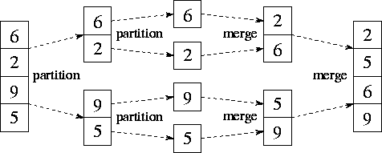
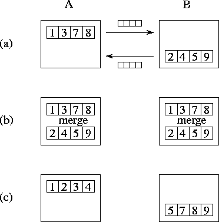
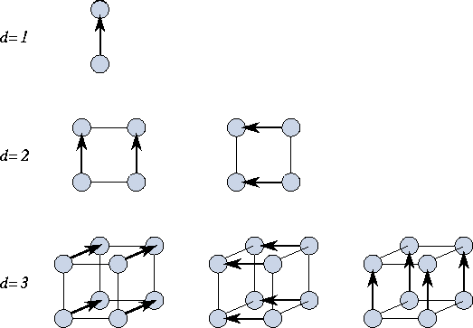
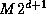
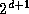
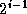
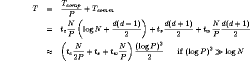

![[DBPP]](pictures//asm_color_tiny.gif)


![[Search]](pictures//search_motif.gif)
Sorting is a common and important problem in computing. Given a sequence of N data elements, we are required to generate an ordered sequence that contains the same elements. Here, we present a parallel version of the well-known mergesort algorithm. The algorithm assumes that the sequence to be sorted is distributed and so generates a distributed sorted sequence. For simplicity, we assume that N is an integer multiple of P , that the N data are distributed evenly among P tasks, and that is an integer power of two. Relaxing these assumptions does not change the essential character of the algorithm but would complicate the presentation.

Figure 11.4: Mergesort, used here to sort the sequence [6,2,9,5].
The two partition phases each split the input sequence; the two merge
phases each combine two sorted subsequences generated in a previous
phase.
The sequential mergesort algorithm is as follows; its execution is illustrated in Figure 11.4.
The merge operation employed in step (4) combines two sorted
subsequences to produce a single sorted sequence. It repeatedly
compares the heads of the two subsequences and outputs the lesser
value until no elements remain. Mergesort requires  time to sort N
elements, which is the best that can be achieved
(modulo constant factors) unless data are known to have special
properties such as a known distribution or degeneracy.
time to sort N
elements, which is the best that can be achieved
(modulo constant factors) unless data are known to have special
properties such as a known distribution or degeneracy.
We first describe two algorithms required in the implementation of parallel mergesort: compare-exchange and parallel merge.
A compare-exchange operation merges two sorted sequences of length M , contained in tasks A and B . Upon completion of the operation, both tasks have M data, and all elements in task A are less than or equal to all elements in task B . As illustrated in Figure 11.5, each task sends its data to the other task. Task A identifies the M lowest elements and discards the remainder; this process requires at least M/2 and at most M comparisons. Similarly, task B identifies the M highest elements.

Figure 11.5: The compare-exchange algorithm, with M=4
. (a) Tasks
A
and B
exchange their sorted subsequences. (b) They perform a
merge operation to identify the lowest and highest M
elements,
respectively. (c) Other elements are discarded, leaving a single
sorted sequence partitioned over the two tasks.
Notice that a task may not need all M of its neighbor's data in order to identify the M lowest (or highest) values. On average, only M/2 values are required. Hence, it may be more efficient in some situations to require the consumer to request data explicitly. This approach results in more messages that contain a total of less than M data, and can at most halve the amount of data transferred.

Figure 11.6: The parallel merge operation, performed in hypercubes
of dimension one, two, and three. In a hypercube of dimension
d
, each task performs d
compare-exchange operations. Arrows
point from the ``high'' to the ``low'' task in each
exchange.
A parallel merge algorithm performs a merge operation on two sorted sequences of length , each distributed over tasks, to produce a single sorted sequence of length  distributed over  tasks. As illustrated in Figure 11.6, this is achieved by using the hypercube communication template. Each of the tasks engages in d+1 compare-exchange steps, one with each neighbor. In effect, each node executes Algorithm 11.1, applying the following operator at each step.
if ( myid AND > 0 ) thenstate = compare_exchange_high(state,message)
else
state = compare_exchange_low(state,message)
endif
In this code fragment, AND is a bitwise logical and operator, used to determine whether the task is ``high'' or ``low'' in a particular exchange; myid and i are as in Algorithm 11.1.
We next describe the parallel mergesort algorithm proper. Each task in the computation executes the following logic.
procedure parallel_mergesort(myid, d, data, newdata)
begin
data = sequential_mergesort(data)
for dim = 1 to d
data = parallel_merge(myid, dim, data)
endfor
newdata = data
end
First, each task sorts its local sequence using sequential mergesort. Second, and again using the hypercube communication structure, each of the tasks executes the parallel merge algorithm d times, for subcubes of dimension 1.. d . The i th parallel merge takes two sequences, each distributed over  tasks, and generates a sorted sequence distributed over tasks. After d such merges, we have a single sorted list distributed over tasks.
Parallel mergesort uses the hypercube communication template at
multiple levels. We review these uses and develop a performance
model. We assume N
data distributed over  tasks (that
is, ), with N
an integer multiple of P
. Hence,
the total number of compare-exchanges is
tasks (that
is, ), with N
an integer multiple of P
. Hence,
the total number of compare-exchanges is
Because each compare-exchange requires one message containing N/P data, the per-processor communication cost is
The computation costs comprise the initial intraprocessor sort and the comparisons performed during the interprocessor communication phase. The former involves a total of comparisons, while the latter requires at most comparisons, thereby giving computation costs summed over P processors of
Because the algorithm is perfectly balanced, we can assume that idle time is negligible. Thus, we obtain the following model for parallel execution time:

© Copyright 1995 by Ian Foster